1.运行
* $ git clone 地址
* npm install
* $ gulp;
2.项目说明
- 此项目是 高德--市区监控 点击追踪 的行政区域图形版
- 区数据监控都是一样的。只是在渲染市下面区的版块这个地方的有点意思。
- 市场上有echarts.map.demo可以满足现实要求。
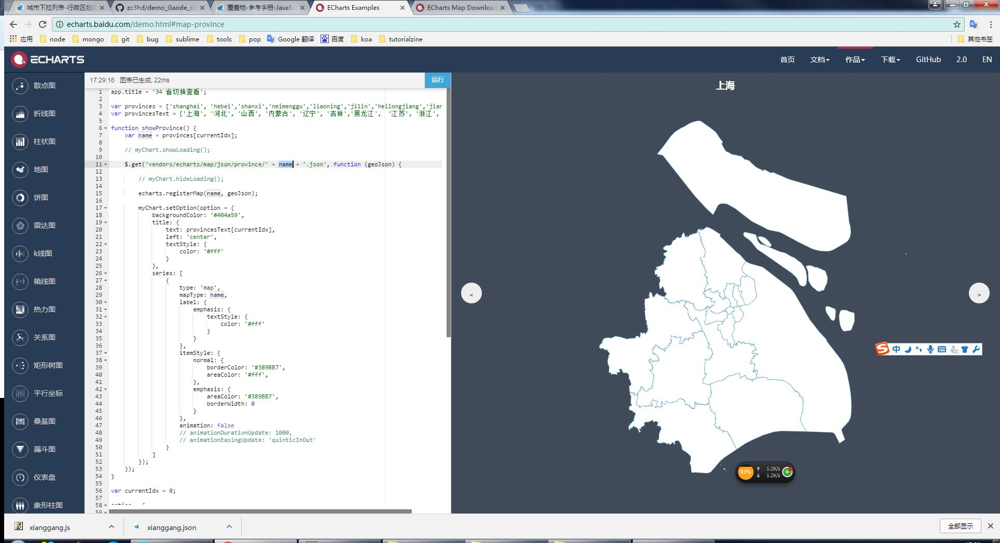
- 但是，echerts里面只提供了部分直辖市下面的区县的数据。剩下就是各个省下面的市的数据。比如我现在想看大同市下面的区县，echarts里面就没有提供下载，只有下面这些：
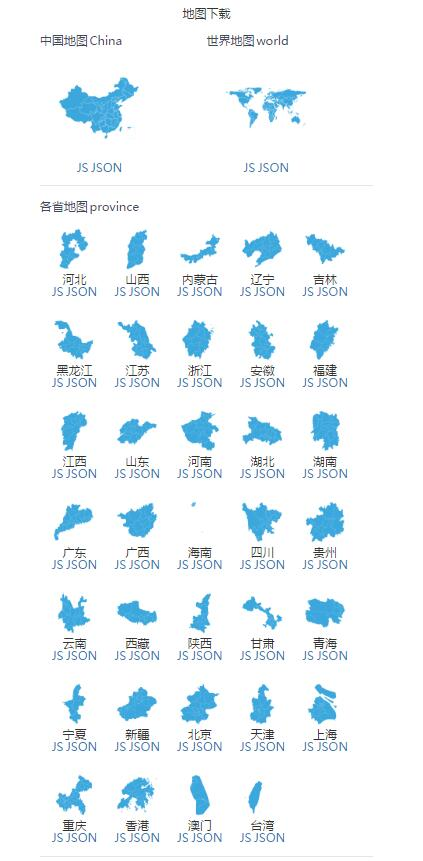
- 所以哥觉得自己撸一个市下面的区县的版块数据，类似上面的。我github上有单独的demo讲形成这个市下面的区县块。
3.项目开始
3.1依赖功能
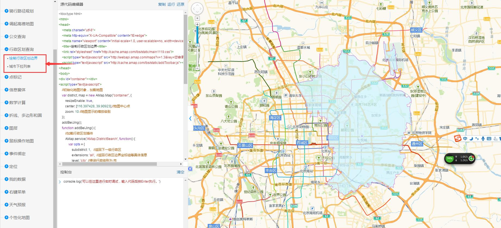
3.2靠近需求
- 需求：显示市下面的区县的版块地图，类似echart，有验收渐变，鼠标悬浮上显示该区的信息，且是实时数据。
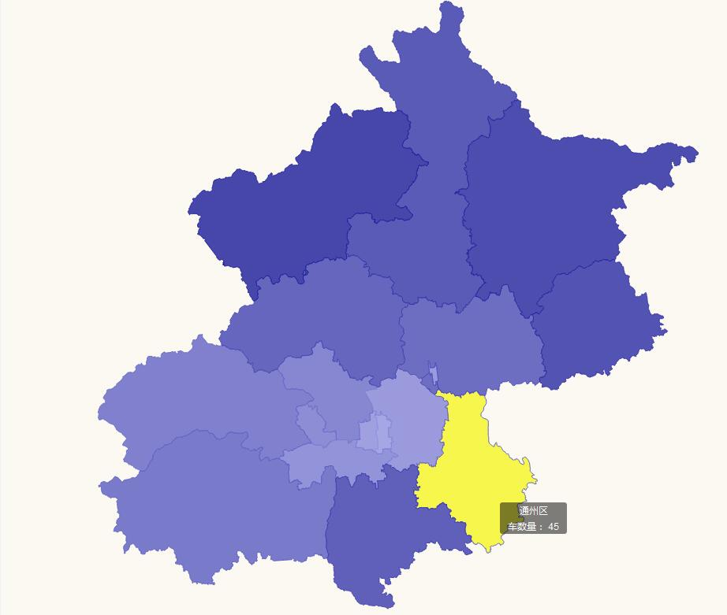
- 总体思路：拿到地图区块是异步的，而且是向高德地图进行请求的，所以先要异步渲染完成所有的区块，然后在ajax拿到我们要绑定的数据。
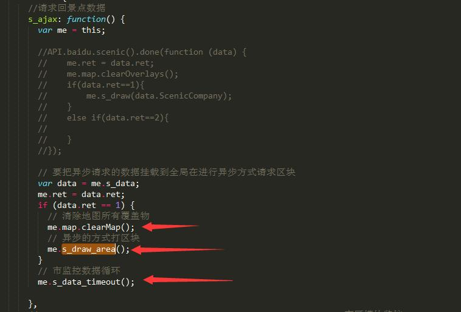
3.3 me.s_draw_area():
- 异步拿到所有区块数据，首先添加区块功能。字段解读看官方API，把要搜索的市的编码（SIfu.city_code）配置到公共文件。成功拿到数据后，绑定地图的MouseMove事件属性，让info信息框有了可以随鼠标动的结果。接着是影藏地图背景。处理拿到的区县的数据列表。
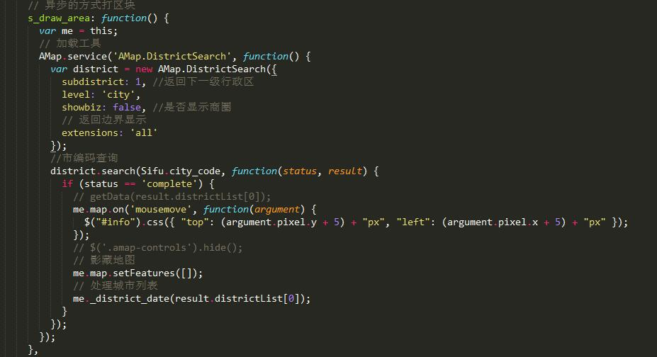
3.4 me._district_date():
- 区块数据的生成需要区块的边界和颜色的渐变。上个函数拿到区县的adcode，用每个区县的adcode请求各自区县的数据进行区块渲染，这里需要一个颜色渐变渲染器。这个函数我也封装了一个模块，需要输入一个起始颜色和结束颜色，还有渐变的长度。返回一个颜色数组。根据区县的数组的长度决定了颜色的渐变长度。同样起始色和终止色配置在公共文件中。
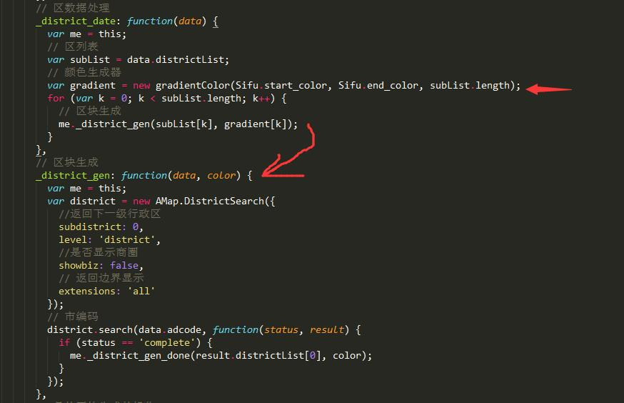
- 公共文件的配置：
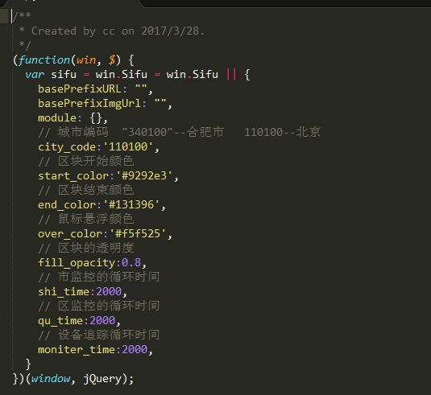
3.5 me._district_gen_done():
- 区块生成的核心：城区多边形覆盖物就是具体看官方API，给区块绑定区块的名字，编码。绑定请求回来的数据。绑定事件，注意绑定事件时，记录下原来的颜色，离开区块后恢复原来的颜色。点击区块和原来的点击市下面区的聚合点的效果是一样的。这个看上一个模块就行。
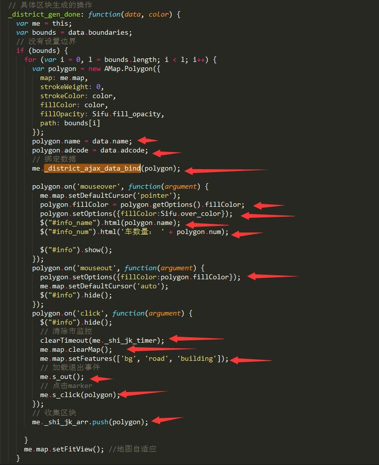
3.6 me._district_ajax_data_bind():
- 给拿到的区块进行请求回来的数据绑定：这里注意上面函数在生成区块时要全局收集区块，把请求回来的自己的数据也要绑定到全局。
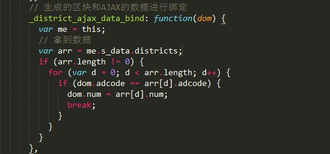
3.7 me.s_data_timeout():
- 区县区块的数据的实时渲染：箭头处为模拟每次拿到的数据。
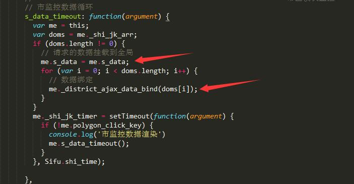
4.绝对安全模式
- 这个标题可能有点夸张，但是在项目中全是极有可能会出现的一个问题。问题大概是这个样子：因为每次真实请求的数据都是ajax异步的，比如就是我们现在项目，我们现在在市下面的区县块的监控层，数据在实时请求，这时我们点击了其中一个区县块进入区县块下面的监控层。这时点击的时候按道理我们要清除上一层的定时器。确实我们也清除了，下面箭头处：
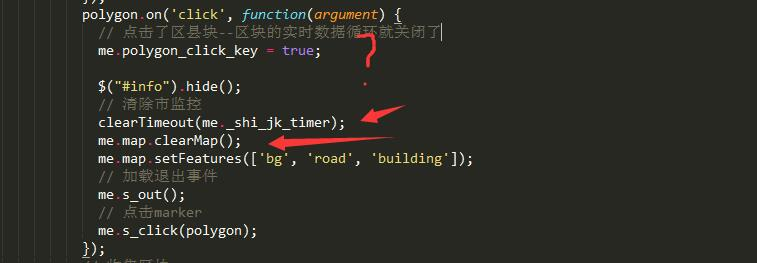
- 这个时候是清除了定时器，但是如果网络不好的时候，刚好在上一层也就是【市层面的区县监控层】 的请求正在请求的时候，我们点击了一个区块，这个时候其实我们清除的定时器上 【市层面的区县监控层】 的上一个定时器。所以接下来就是 【市层面的区县监控层】 继续下一个定时器和【区县块下的监控层】的定时器一起开启，这个时候就是我们常说的定时器没管理好，奔了。所以绝对安全模式，就是在点击一个【市层面的区县监控层】区县块后打开一个开关，即使出现原来的那样的情况，也不会同时有两个定时器。
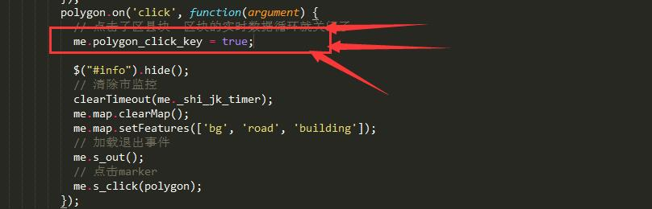
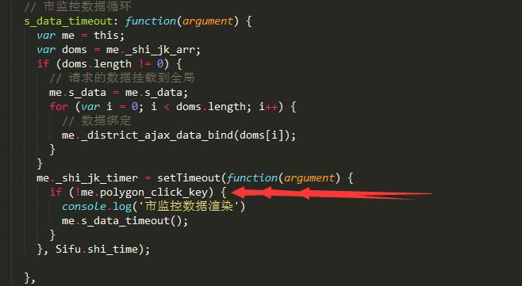
- 其他的开关看代码注释就行。
5.总结
- 这次做的这个项目感觉更拓展了以后项目多层数据展示的思路了，做省市区监控层数据的聚合时，可以按照这样的区块模式进行聚合数据显示。更好看，体验更好。
- 有任何想法一定要动手敲出来。
- 前端确认数据后可以直接和后台进行约定数据结构。省时又快。